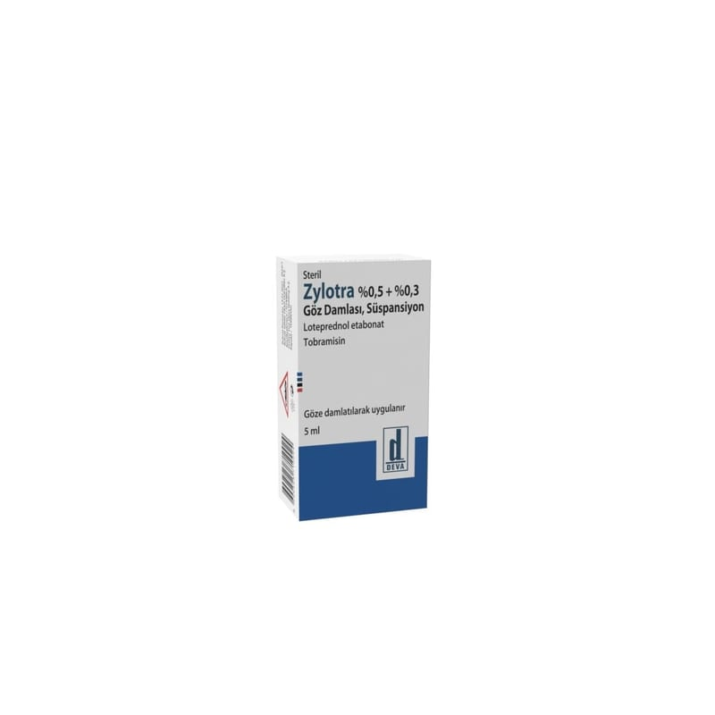

Zylotra %0,5 + %0,3 Göz Damlası, Süspansiyon, 1 Adet

Ne için kullanılır
KT · Bölüm 1ZYLOTRA etkin madde olarak her ml’sinde 5 mg loteprednol etabonat ve 3 mg tobramisin içeren bir göz damlasıdır. Loteprednol etabonat, kortikosteroidler adı verilen ve vücuttaki iltihabi durumların tedavisinde kullanılan bir ilaç grubunda yer alır. Tobramisin bir antibiyotiktir ve bakterilerin yol açtığı enfeksiyonların tedavisinde kullanılır.
ZYLOTRA, beyaz-sarımsı beyaz renkte, yabancı partikül içermeyen 5 ml’lik süspansiyon içeren opak, beyaz renkli, damlalıklı, düşük yoğunluklu polietilen (LDPE) şişelerde kullanılma sunulmaktadır.
ZYLOTRA, gözünüzde meydana gelen, duyarlı bakterilerin neden olduğu yüzeysel enfeksiyonların veya enfeksiyon riskine yol açan iltihabi durumların tedavisi için, göze damlatılarak kullanılır.
Doktorunuz ZYLOTRA’yı size, gözünüzdeki bakteriyel konjonktiviti tedavi etmek amacıyla reçete etmiş olabilir.
Bakteriyel konjonktivit, gözün ön yüzeyini ve göz kapaklarının iç yüzeylerini kaplayan konjonktiva isimli bölümde bakterilerin neden olduğu bir enfeksiyon durumudur.
Hastalık, etkilenen gözde kızarıklık, göz kapaklarında ödem (şişlik), iltihabi akıntı, çapaklanma ve bazen ağrı gibi belirtiler ile ortaya çıkar.